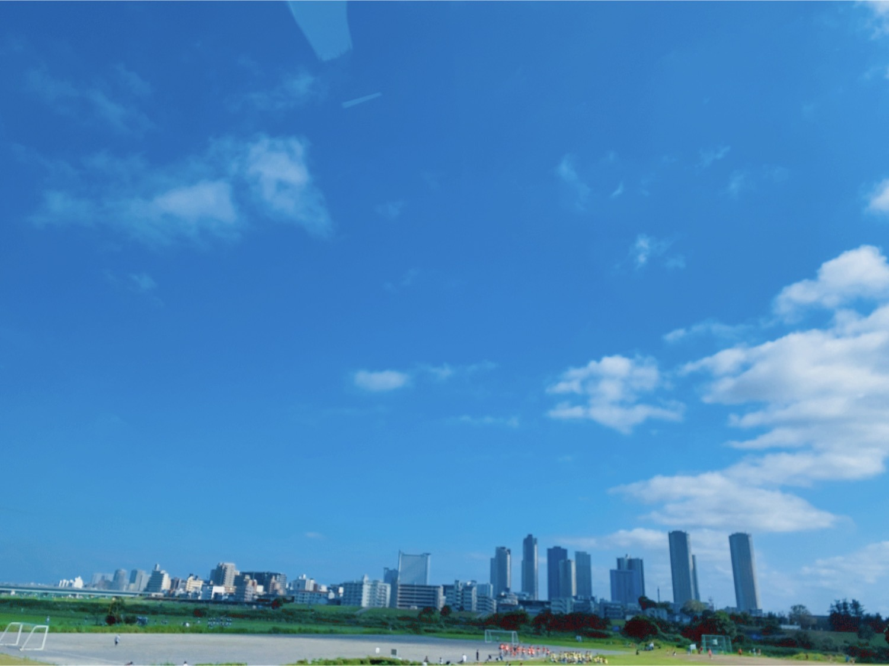
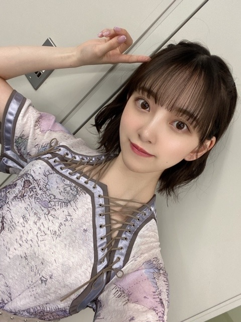

2020/0719Sunココロは見えなくないよ
こんにちは
昨日は音楽の日 生放送でした
乃木坂46の出番とは別に
ZARDさんの負けないで
を歌わせていただきました
ZARDさんの曲は昔から
よく聴かせていただいていて
改めて素敵な歌でそんな歌を
歌わせていただけて嬉しかったです
他のアーティストさんの歌も
凄く心に染みて出番以外もずっと
テレビに釘付けでした
みなさんに少しでも届いていたらいいな...
" どんなに離れてても心はそばにいるわ "

雨続きの日々でしたが今日はからっと
晴れましたね

ハーフツインまた、しますね♩
では
2020/07/19 17:48
コメント(367)
かわいかったなぁ
ブログ更新ありがとう
昨日はお疲れ様でした
昨日はお疲れ様でした
音楽の日の髪型最高でしたー。
世界中の隣人よもテレビで見れて楽しかったです
Mステも楽しみです
世界中の隣人よもテレビで見れて楽しかったです
Mステも楽しみです
みおなちゃん更新ありがとう╰(*´︶`*)╯♡
音楽の日お疲れ様でした(*´꒳`*)
ZARDさんの負けないでも含め素敵でしたよ（╹◡╹）♡
こういった状況やから歌がしみますね〜
写真もありがとう(๑>◡<๑)
ハーフツインも似合ってる
音楽の日お疲れ様でした(*´꒳`*)
ZARDさんの負けないでも含め素敵でしたよ（╹◡╹）♡
こういった状況やから歌がしみますね〜
写真もありがとう(๑>◡<๑)
ハーフツインも似合ってる
ブログ更新早すぎありがとうございます
堀さんってお顔美しいからスポーティ系も甘めキレイめ系もどんなファッションでも似合うからすげー
と思ってたけど恐らくそれに合わせてメイクも写真映る時の表情も変えてるから似合ってるんや
現時点で堀さんだけでなく女の子の努力・大変さ・すごさに気付けてよかった
堀さんのブログほんまに色々な堀さん見れて楽しい嬉しい
ハーフツイン楽しみだなぁ
更新楽しみに待ってます
堀さんってお顔美しいからスポーティ系も甘めキレイめ系もどんなファッションでも似合うからすげー
と思ってたけど恐らくそれに合わせてメイクも写真映る時の表情も変えてるから似合ってるんや
現時点で堀さんだけでなく女の子の努力・大変さ・すごさに気付けてよかった
堀さんのブログほんまに色々な堀さん見れて楽しい嬉しい
ハーフツイン楽しみだなぁ
更新楽しみに待ってます
ハーフツインめっちゃ似合ってた！
未央奈お疲れ様！！
ブログ更新ありがとう
昨日の音楽の日お疲れ様でした
未央奈の髪型が似合いすぎて…
初披露の世界中の隣人よ、最高に泣けました…
音楽っていつ聴いても素晴らしいですね
またブログ楽しみにしてるよ
体調に気をつけて頑張ってね！！
ブログ更新ありがとう
昨日の音楽の日お疲れ様でした
未央奈の髪型が似合いすぎて…
初披露の世界中の隣人よ、最高に泣けました…
音楽っていつ聴いても素晴らしいですね
またブログ楽しみにしてるよ
体調に気をつけて頑張ってね！！
未央ちゃんブログ更新ありがとうございます。今日の写真もかわいいです。未央ちゃん応援してます。頑張ってね。
未央奈ちゃん、こんばんは。
「音楽の日」見ました。お疲れ様。
『負けないで』『世界中の隣人よ』最高でした。やっぱり、音楽と言葉のパワーを感じました。
また、明日から頑張れます。ありがとう。
ウインク、可愛い過ぎます！！！
また、更新待ってます。
「音楽の日」見ました。お疲れ様。
『負けないで』『世界中の隣人よ』最高でした。やっぱり、音楽と言葉のパワーを感じました。
また、明日から頑張れます。ありがとう。
ウインク、可愛い過ぎます！！！
また、更新待ってます。
1枚目の写真で、また明日から仕事頑張らそうです。
ほっぺのぷにぷに感がお気に入りです。
ほっぺのぷにぷに感がお気に入りです。
ほりどんかわいい。
ああああああああ
昨日見るの忘れてたぁー
録画もないし
次は見るぞ
昨日見るの忘れてたぁー
録画もないし
次は見るぞ
ダークな堀さんも、また、きれいで、素敵です。久しぶりに、生放送で、歌う、堀さんを観ました。負けないでを歌う堀さんも、カッコよかったですし、乃木坂46で、歌う、堀さんは、やっぱり、一番素敵でしたし、一番スターのオーラが、ありました。もっと、堀さんのアップを映してほしかったですし、ダンスも、もっと、映して、ほしかったです。堀さんが、誰よりもカッコよかったです。
みおな、こんばんは！更新ありがとう。 近況報告ありがとうございます。 では、毎日みおなに良いこと沢山ありますように！ おやすみおな！！
音楽の日お疲れ様！
未央奈は髪短い方が個人的に好きだな！
笑顔が100倍俺は綺麗に可愛く見える！
世界中の隣人よ振り付けが加わるとより強くメッセージが伝わってきて離れてても一緒なんだなって思えた！
素敵なパフォーマンスありがとう
未央奈は髪短い方が個人的に好きだな！
笑顔が100倍俺は綺麗に可愛く見える！
世界中の隣人よ振り付けが加わるとより強くメッセージが伝わってきて離れてても一緒なんだなって思えた！
素敵なパフォーマンスありがとう
ブログ更新＋音楽の日お疲れ様でした～
元気出た！！(笑)
可愛いーー(o^∀^o)
暑くなってきたけど、
体調に気をつけて頑張ってね！(o＾・＾o)
元気出た！！(笑)
可愛いーー(o^∀^o)
暑くなってきたけど、
体調に気をつけて頑張ってね！(o＾・＾o)
ウィンク最高の可愛さ。
お疲れ様！
いつみても、どのシーンでも可愛すぎる！
ホント未央奈ちゃんには癒されるね♪
いつみても、どのシーンでも可愛すぎる！
ホント未央奈ちゃんには癒されるね♪
堀ちゃん、昨日は歌番組お疲れ様でした(^-^)久しぶりにテレビで歌う姿を見るとかわいすぎて興奮したよ
ブログ更新ありがとうございます
昨日の音楽の日見ました！負けないで、裸足のsummer
世界中の隣人よを見て聞いて頑張らなきゃいけないなと思いました。
今日晴れましたね！
未央奈無理はしないでください！未央奈さんは１人じゃありません！
昨日の音楽の日見ました！負けないで、裸足のsummer
世界中の隣人よを見て聞いて頑張らなきゃいけないなと思いました。
今日晴れましたね！
未央奈無理はしないでください！未央奈さんは１人じゃありません！
乃木坂のみんなが心身共に健康でいられるように、応援します。
こんばんは
ココロは見えますよね～
音楽の日、嬉しかったです！
生放送でワクワクしました♪
負けないでエレガントでした！
歌詞にもとても励まされます☆
新曲披露とっても感動しました！
ハーフツインとっても可憐です✨
青空の写真も清々しいですねー！
Tシャツ姿とっても爽やかです✌
晴れやかな表情にも幸せ感じます♡☺
ココロは見えますよね～
音楽の日、嬉しかったです！
生放送でワクワクしました♪
負けないでエレガントでした！
歌詞にもとても励まされます☆
新曲披露とっても感動しました！
ハーフツインとっても可憐です✨
青空の写真も清々しいですねー！
Tシャツ姿とっても爽やかです✌
晴れやかな表情にも幸せ感じます♡☺
ミオナ..今日のウインク最高じゃないか..。
ZARD聴いてたんだ、大人だね♪「もう少しあと少し」とか「この愛に泳ぎつかれても」が好きなんだけど未央奈はどんな曲が好きなんだろう？晴れの日は「カラッといこう」がすごく合うよ〜 離れていても心はつながってる事は「世界中の隣人よ」で改めて学ばせてもらったよ 本当にありがとうm(__)m くぼちんの歌もすごいよね、まつりとみーぱんも良かったけどさ、でも、やっぱ乃木坂だな！音楽の日 乃木坂46しか見なかったもん 笑 それくらい大好きってことで許してよ、次に会える日を楽しみにしてるよ❗
ZARD聴いてたんだ、大人だね♪「もう少しあと少し」とか「この愛に泳ぎつかれても」が好きなんだけど未央奈はどんな曲が好きなんだろう？晴れの日は「カラッといこう」がすごく合うよ〜 離れていても心はつながってる事は「世界中の隣人よ」で改めて学ばせてもらったよ 本当にありがとうm(__)m くぼちんの歌もすごいよね、まつりとみーぱんも良かったけどさ、でも、やっぱ乃木坂だな！音楽の日 乃木坂46しか見なかったもん 笑 それくらい大好きってことで許してよ、次に会える日を楽しみにしてるよ❗
負けないで
の時に司会者さんがマラソンしてたの(笑)
晴れましたね！！
珍しい！
驚きましたよ。
雨続きで日常だったから、
「こんな日もあるんだ！！」
って思ってしまった(笑)
はい、またお待ちしてます。
の時に司会者さんがマラソンしてたの(笑)
晴れましたね！！
珍しい！
驚きましたよ。
雨続きで日常だったから、
「こんな日もあるんだ！！」
って思ってしまった(笑)
はい、またお待ちしてます。
この可愛い髪型がハーフツインなのか
勘違いしてたからもっと女の子の髪型勉強しないと
勘違いしててごめんなさい
ショートボブでも色々アレンジあるんですね
またハーフツインの画像もあげてね
勘違いしてたからもっと女の子の髪型勉強しないと
勘違いしててごめんなさい
ショートボブでも色々アレンジあるんですね
またハーフツインの画像もあげてね
心はつながってるよね
音楽の日、14時からほとんどの時間見てました！！
「負けないで」すごくよかったよ！
ずっと未央奈ちゃんのこと見てました
何回も聴いた曲だけど、乃木坂メンバーが歌っても変わらず心にしみました。
そして乃木坂の曲は最後から2番目でしたね！！
本当に久しぶりに歌番組で見れて、まずはそこが嬉しすぎました
リモートライブももちろんいいけど、やっぱり歌番組に選ばれて、みんなが笑顔でパフォーマンスする姿が大好きです
未央奈ちゃん、どんな髪型も似合って、可愛いね
音楽の日、14時からほとんどの時間見てました！！
「負けないで」すごくよかったよ！
ずっと未央奈ちゃんのこと見てました
何回も聴いた曲だけど、乃木坂メンバーが歌っても変わらず心にしみました。
そして乃木坂の曲は最後から2番目でしたね！！
本当に久しぶりに歌番組で見れて、まずはそこが嬉しすぎました
リモートライブももちろんいいけど、やっぱり歌番組に選ばれて、みんなが笑顔でパフォーマンスする姿が大好きです
未央奈ちゃん、どんな髪型も似合って、可愛いね
コロナが流行って緊急事態宣言が出されてから毎日、未央奈ちゃんのブログの更新が楽しみの一つになっています
音楽の日、拝見しました。とても可愛かったです。音楽の日という番組が始まる原因となったものとは今年に関しては異なりますけども、音楽の力、影響力は凄まじいと改めて感じることができました。
「世界中の隣人よ」改めて良い曲だなと思いました。
「Route 246」が楽しみになりました
話は変わりますが、先日、のぎおびの方でおすすめのゲーム、ドラマなどを教えて欲しいと仰っていたので個人的なお勧めのドラマを紹介したいと思います。
それは海外ドラマでタイトルは「アウトブレイク」というドラマです。
この作品はNetflixさんの方で見ることができてオリジナル言語はフランス語です。
あらすじ？としては今年流行したコロナのことで、とある病院が舞台になっています。未央奈ちゃんならハマると思いますので是非！
音楽の日、拝見しました。とても可愛かったです。音楽の日という番組が始まる原因となったものとは今年に関しては異なりますけども、音楽の力、影響力は凄まじいと改めて感じることができました。
「世界中の隣人よ」改めて良い曲だなと思いました。
「Route 246」が楽しみになりました
話は変わりますが、先日、のぎおびの方でおすすめのゲーム、ドラマなどを教えて欲しいと仰っていたので個人的なお勧めのドラマを紹介したいと思います。
それは海外ドラマでタイトルは「アウトブレイク」というドラマです。
この作品はNetflixさんの方で見ることができてオリジナル言語はフランス語です。
あらすじ？としては今年流行したコロナのことで、とある病院が舞台になっています。未央奈ちゃんならハマると思いますので是非！
堀ちゃん、ブログ更新ありがとう！
音楽っていいよね！
いろんな人に勇気を与えたりできるから。
大好き！
音楽っていいよね！
いろんな人に勇気を与えたりできるから。
大好き！
こんばんは。ブログ更新ありがとうございます。
音楽の日、見ましたよ～。録画して編集して永久保存版です。最近は乃木坂46も出番が増えましたね。それと同時に皆さんのスキルアップを感じます。
ZARDさんもそうですが、70～90年代の古い曲が改めて注目されるようになりました。時代は回る、って本当ですね。
ではまた。
音楽の日、見ましたよ～。録画して編集して永久保存版です。最近は乃木坂46も出番が増えましたね。それと同時に皆さんのスキルアップを感じます。
ZARDさんもそうですが、70～90年代の古い曲が改めて注目されるようになりました。時代は回る、って本当ですね。
ではまた。
ハーフツイン可愛すぎました ！！♥️
音楽番組とか出る時やって欲しいです ！！！
未央奈ちゃんはよくブログ更新してくれるから
本当好きです！
応援してます！だいすきです！！
音楽番組とか出る時やって欲しいです ！！！
未央奈ちゃんはよくブログ更新してくれるから
本当好きです！
応援してます！だいすきです！！
自撮り可愛すぎる
昨日は素敵なパフォーマンスをありがとう！
世界中の隣人よは振り付けが加わるとより強くメッセージが伝わってきて
離れてても一緒だなって感じたよ！
昨日は素敵なパフォーマンスをありがとう！
世界中の隣人よは振り付けが加わるとより強くメッセージが伝わってきて
離れてても一緒だなって感じたよ！
みおな
今日もお疲れ様です
音楽の日見たよ
負けないで歌ってたよねー
並んでるメンバーが、今の乃木坂を特に引っ張っている人達で構成されてて、頼もしかったです（なんか心強い感じがした）
乃木坂が歌ってるのを見ると、ライブに行きたくなるけど、最近はコロナがまた広がってしまっているから、無理そうだね
今は待つしかないから、世界中の隣人よを聞いて待ってます（最近、アナスターシャより聴いてる）
でもこれっきりみおなに会えないなんて事になったら寂しいな…
去年のように、みおなにライブで手を振って貰える日が来るのを祈ってます（去年はみおなが俺に2回も手を振ってくれたんだよ）
今日はいい天気だったから暑かったけど、やっぱり晴れはいいですね
熱中症とコロナには気を付けて過ごして下さい
ありがとうございました
今日もお疲れ様です
音楽の日見たよ
負けないで歌ってたよねー
並んでるメンバーが、今の乃木坂を特に引っ張っている人達で構成されてて、頼もしかったです（なんか心強い感じがした）
乃木坂が歌ってるのを見ると、ライブに行きたくなるけど、最近はコロナがまた広がってしまっているから、無理そうだね
今は待つしかないから、世界中の隣人よを聞いて待ってます（最近、アナスターシャより聴いてる）
でもこれっきりみおなに会えないなんて事になったら寂しいな…
去年のように、みおなにライブで手を振って貰える日が来るのを祈ってます（去年はみおなが俺に2回も手を振ってくれたんだよ）
今日はいい天気だったから暑かったけど、やっぱり晴れはいいですね
熱中症とコロナには気を付けて過ごして下さい
ありがとうございました
未央奈さん、こんばんは
見つめられてるf(^_^)
ウインク上手にできましたね
「負けないで」素敵でした
「揺れる想い」も好きな曲のひとつです
青く澄んだ あの空のような
君と歩き続けたい
久しぶりに晴れましたね
空見てましたよ(^_^)
今日、一番嬉しかったこと
空と音楽の日の写真がゲットできたこと
大切にします！
また、ハーフツインしてくださいな
いつも、ありがとう
大好きです(^_^)
見つめられてるf(^_^)
ウインク上手にできましたね
「負けないで」素敵でした
「揺れる想い」も好きな曲のひとつです
青く澄んだ あの空のような
君と歩き続けたい
久しぶりに晴れましたね
空見てましたよ(^_^)
今日、一番嬉しかったこと
空と音楽の日の写真がゲットできたこと
大切にします！
また、ハーフツインしてくださいな
いつも、ありがとう
大好きです(^_^)
音楽の日見ました。
未央奈さんのハーフツインも似合ってますね、綺麗でした。
早くまた観客入れてのライブが復活して欲しいですね。
頑張ってください、応援しています。
未央奈さんのハーフツインも似合ってますね、綺麗でした。
早くまた観客入れてのライブが復活して欲しいですね。
頑張ってください、応援しています。
未央奈お疲れ様です！
ブログ更新ありがとう！
コメント遅くなってごめんなさい
ZARDさんの｢負けないで｣見ました！
めっちゃ心に響いて感動しました
ハーフツイン可愛かった！
これからもずっと応援してる！
がんばれー！
ブログ更新ありがとう！
コメント遅くなってごめんなさい
ZARDさんの｢負けないで｣見ました！
めっちゃ心に響いて感動しました
ハーフツイン可愛かった！
これからもずっと応援してる！
がんばれー！
未央奈さん、ブログありがとう！
音楽の日の、負けないで、いい曲です。心に染みました。
世界中の隣人よ、もよかった。未央奈さんと乃木坂のみんなが歌っているところを久しぶりに見れて嬉しかったです。
今回の写真も可愛い！色んな顔を持った未央奈ちゃん、大好きです。
天気が安定しないので、体調に気をつけてね。
音楽の日の、負けないで、いい曲です。心に染みました。
世界中の隣人よ、もよかった。未央奈さんと乃木坂のみんなが歌っているところを久しぶりに見れて嬉しかったです。
今回の写真も可愛い！色んな顔を持った未央奈ちゃん、大好きです。
天気が安定しないので、体調に気をつけてね。
ZARD良いよねぇ。
個人的に、ボーカルの坂井泉水さんと絢音ちゃんが似てると思ってる。
『夏を待つセイルのように』って曲がこの時期凄い聴きたくなる！聴いてみてー！
個人的に、ボーカルの坂井泉水さんと絢音ちゃんが似てると思ってる。
『夏を待つセイルのように』って曲がこの時期凄い聴きたくなる！聴いてみてー！
昨日の音楽の日で推しメンなったわ
応援してます！
応援してます！
未央奈ちゃん、昨日(7/18(土))の音楽の日は
ZARDさんの「負けないで」と「裸足でSummer」、
「世界中の隣人よ」全て見たよ！！
堂々とした立ち居振舞いで歌ってる姿がとても
美人だったよ
ZARDさんの「負けないで」の歌詞も人を元気
させる良い曲だよね！
他に「Don't you see」と「揺れる思い」、「翼を広げて」、「DAN DAN心引かれてく」などの曲も良い曲だよ！
ハーフツインまた期待してるね
では
ZARDさんの「負けないで」と「裸足でSummer」、
「世界中の隣人よ」全て見たよ！！
堂々とした立ち居振舞いで歌ってる姿がとても
美人だったよ
ZARDさんの「負けないで」の歌詞も人を元気
させる良い曲だよね！
他に「Don't you see」と「揺れる思い」、「翼を広げて」、「DAN DAN心引かれてく」などの曲も良い曲だよ！
ハーフツインまた期待してるね
では
更新ありがとうございます(*´∀`*)ノ
2つとも見てました
未央奈ちゃんのハーフツインがめちゃくちゃ可愛くて、とても癒されました
どのポジションにいてもいつも目がいくのは未央奈ちゃんばかりで、惹きつける力というか…魅せる力が素晴らしいなぁて改めて感じました✨表情ひとつひとつにストーリーを感じ、目と耳両方で楽しませていただきました(*^_^*)
2つとも見てました
未央奈ちゃんのハーフツインがめちゃくちゃ可愛くて、とても癒されました
どのポジションにいてもいつも目がいくのは未央奈ちゃんばかりで、惹きつける力というか…魅せる力が素晴らしいなぁて改めて感じました✨表情ひとつひとつにストーリーを感じ、目と耳両方で楽しませていただきました(*^_^*)
未央奈ちゃん、こんばんは♪
ザードさんの曲を歌ったのですね。
応援歌で有名な曲なのですね。
音楽の日で乃木坂さんを見れませんでした。
未央奈ちゃん、ごめんなさい。
僕は見たかったです。
今回のブログの写真は1枚目の寝転んでる
写真が好きです。
3枚目の青空の写真も好きです。
乃木坂工事中はあとでゆっくり見ます。
未央奈ちゃんが出てくればよいのですが。
またコメントするね☆
ザードさんの曲を歌ったのですね。
応援歌で有名な曲なのですね。
音楽の日で乃木坂さんを見れませんでした。
未央奈ちゃん、ごめんなさい。
僕は見たかったです。
今回のブログの写真は1枚目の寝転んでる
写真が好きです。
3枚目の青空の写真も好きです。
乃木坂工事中はあとでゆっくり見ます。
未央奈ちゃんが出てくればよいのですが。
またコメントするね☆
未央奈ちゃん更新ありがとう
音楽の日、観ましたよ(^^)
「負けないで」も良かったし、
「世界中の隣人よ」も感動しました✨
何よりも髪型が可愛くてびっくりww
またやってほしいです～(*^^*)
音楽番組は、やっぱり良きですな♪
音楽の日、観ましたよ(^^)
「負けないで」も良かったし、
「世界中の隣人よ」も感動しました✨
何よりも髪型が可愛くてびっくりww
またやってほしいです～(*^^*)
音楽番組は、やっぱり良きですな♪
こんばんは！
昨日近鉄パッセのパネル展行ってきましたよ。
実は飛行機ちょっと怖い。って書かれてたパネルが好きです。笑
あの何気ない笑顔がステキです。
あと、丸デブ総本店も行ったんですよ！中華そば美味しかったです。笑
そのあと大河ドラマ館も行ってきました。
堀ちゃんのおかげで久しぶりに楽しい１日なりましたよ。
ありがとう。
パネル抽選当たるといいなぁ。
昨日近鉄パッセのパネル展行ってきましたよ。
実は飛行機ちょっと怖い。って書かれてたパネルが好きです。笑
あの何気ない笑顔がステキです。
あと、丸デブ総本店も行ったんですよ！中華そば美味しかったです。笑
そのあと大河ドラマ館も行ってきました。
堀ちゃんのおかげで久しぶりに楽しい１日なりましたよ。
ありがとう。
パネル抽選当たるといいなぁ。
更新ありがとう〜！！
音楽の日よかったよ！
はださま、隣人ちょーよかった
未央奈の髪型最高だった！！
ほんと大好き！！
音楽の日よかったよ！
はださま、隣人ちょーよかった
未央奈の髪型最高だった！！
ほんと大好き！！
未央奈ちゃんお疲れ様～
音楽の日の髪型可愛かった～
音楽の日の髪型可愛かった～
未央奈ちゃん いつも
がんばってくれて
ありがとう⁉︎
可愛くてありがとう⁉︎(^^)
がんばってくれて
ありがとう⁉︎
可愛くてありがとう⁉︎(^^)
堀さん、こんばんは。
自分に負けないでっていう力強い応援の歌は堀さんにぴったりだとおもいます。
堀さんの口角が上がってるのを見るだけで僕は元気が出ます。いつもありがとうございます。
自分に負けないでっていう力強い応援の歌は堀さんにぴったりだとおもいます。
堀さんの口角が上がってるのを見るだけで僕は元気が出ます。いつもありがとうございます。
未央奈ちゃん、ブログ更新ありがとう！
音楽の日見たよ！｢裸足でSummer｣のサビ前可愛かった！｢世界中の隣人よ｣も2期の2人がシンメでなんかエモかったよ！
体調には気をつけてね。
音楽の日見たよ！｢裸足でSummer｣のサビ前可愛かった！｢世界中の隣人よ｣も2期の2人がシンメでなんかエモかったよ！
体調には気をつけてね。
未央奈ちゃん音楽の日お疲れ様でした！！
ハーフツイン超絶可愛かったです！
またみたいな〜
ハーフツイン超絶可愛かったです！
またみたいな〜


アナスターシャが好きすぎて、
自分で曲を分析しています。
You Tubeにコメントとして、解説してます。
良かったら見てね。
大好きです！！